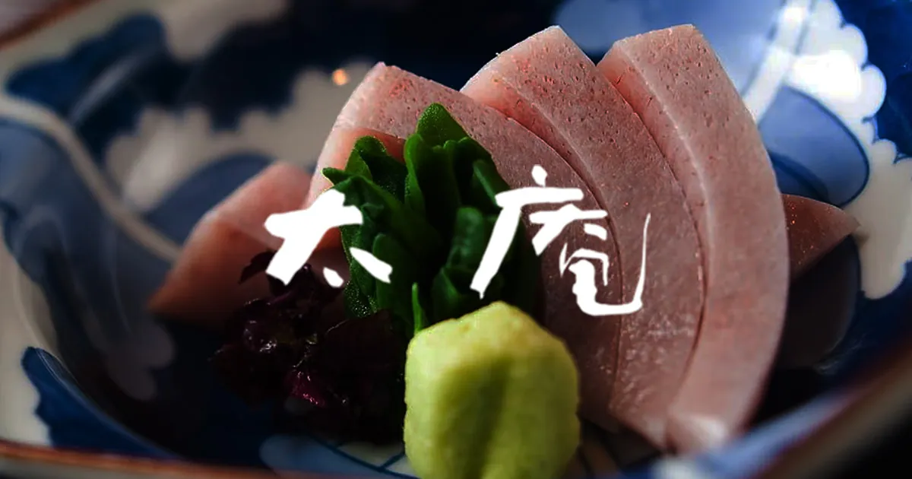
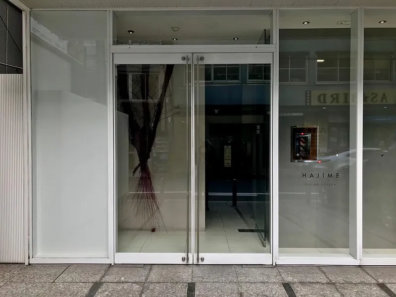

3-Star Michelin Dinner · Two Days · Kansai

16 seats at a wooden counter; open charcoal grill; photography welcome[2]
Guests choose from 5 main-course options — breaks kaiseki convention[4]
Bookable in English via TABLEALL or OMAKASE JE — no intermediary needed[3]
Min. 1 guest · min. age 11 · smart casual

Signature Chikyu (Planet Earth): ~110 ingredients on one landscape plate — nothing like it elsewhere in Japan[6]
3 stars 17 months after opening — fastest ascent in Japanese culinary history[5]
Jacket + leather shoes required; no photography[1] · 22 seats
Min. 1 guest · min. age 16
Pick Taian for most travellers: lowest price of the three, solo-friendly, interactive counter format, English booking, photography welcome.
Pick Hajime if the Chikyu dish is the reason you're going — accept the dress code and the photo ban. There is genuinely nothing like it elsewhere.
Kashiwaya Senriyama for couples seeking the most traditional garden kaiseki experience; book via Rakuten Travel Experiences with English support.
| Destination | Train | Fare | Friday | Saturday AM | Notes |
|---|---|---|---|---|---|
| Kyoto | 15–30 min | ¥560 | ✓ Full day | ✗ Too much | Full loop = ~9 hrs[15]; don't attempt on dinner day |
| Kobe | 20 min JR Rapid | ¥420 | ✓ Full day | ✓ Back by 14:00 | Short enough for Saturday AM with dinner window intact[16] |
| Nara | 30 min | ¥510 | ✓ Full day | ~ Marginal | Viable Saturday if you skip Todaiji's far precincts[17] |
| Koyasan | 2 hr each way | ¥1,500+ | ~ Long day | ✗ Kills Saturday | 4 hr round-trip eliminates the dinner window entirely[18] |